Fast On-device LLM Inference with NPUs
ASPLOS ’25
Fast On-device LLM Inference with NPUs
Background & Motivation
The Rise of Mobile LLMs
- Trend: Growing interest in running LLMs locally on mobile devices (e.g., Apple Intelligence, Android AI Core).
- Drivers:
- Enhanced Privacy (data stays on device).
- Reduced Latency & Offline Capability.
- Personalization.
- Feasibility: Advancements in mobile-sized LLMs (1B-10B params) show comparable performance to larger models.
- Applications: UI Task Automation, Smart Reply, Context-Aware Assistants.

The Problem: High Inference Latency
- Even mobile-sized LLMs (Gemma-2B, Qwen-1.8B) are too slow for interactive use.
- Example: UI task step takes ~8s (Qwen-1.8B on CPU).
- Example: Email reply takes ~27s (Gemma-2B on CPU).
- Bottleneck Analysis:
- Prefill Stage (Prompt Processing) dominates End-to-End Latency (up to 98%!).
- Decoding Stage (Token Generation) is often less critical for mobile tasks.
- Why Prefill is Slow on Mobile:
- Mobile tasks often use long prompts (UI context, user history).
- Mobile CPUs/GPUs have limited parallel compute capacity compared to servers.
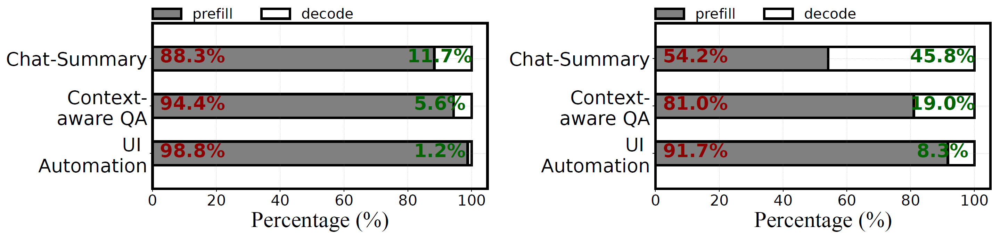
The Opportunity: Mobile NPUs
- Neural Processing Units (NPUs) are ubiquitous in modern mobile SoCs (Qualcomm Hexagon, Google Edge TPU, etc.).
- Strengths:
- High INT8 Performance: Optimized for integer math (e.g., 73 TOPS). Up to 18x/4x faster than CPU/GPU on CNNs.
- Energy Efficient: Lower power consumption than CPU/GPU.
- Less Resource Contention: Dedicated hardware, unlike GPUs used for rendering.
- Unified Memory (often): Reduces data transfer overhead vs. discrete GPUs.
- Goal: Can we leverage NPUs to accelerate the compute-bound prefill stage?
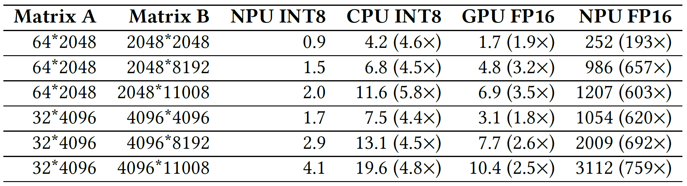
DNN Execution Workflow on Mobile NPUs
- NPU Environment Setup
- Initialize NPU drivers and allocate memory.
- Compute Graph Construction
- Translate model into NPU-specific IR.
- Graph Optimization
- Compile, Operator fusion
- Memory layout adjustments
- Graph Execution
- Execute optimized graph on NPU with fixed-shape inputs.
- Cleanup
- Free NPU memory and resources
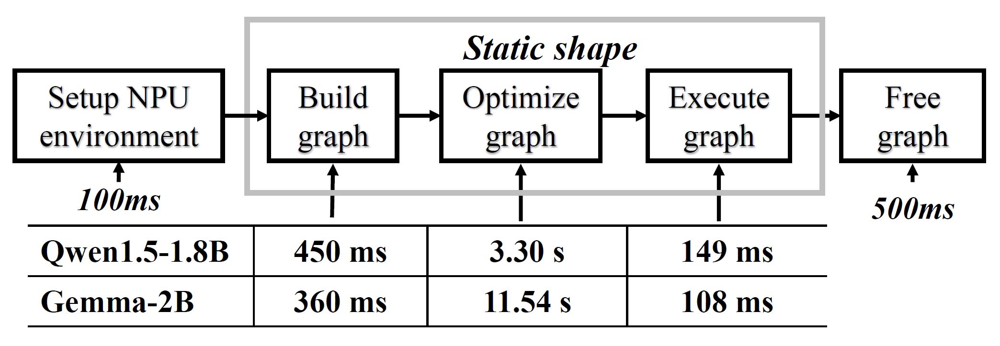
The Challenges of Using NPUs for LLMs
Directly using NPUs for LLMs is inefficient due to fundamental mismatches:
- Variable-Length Prompts vs. Static NPU Execution Graphs:
- NPUs need pre-compiled, fixed-shape graphs.
- Re-compiling for each prompt length is extremely slow (e.g., ~11s for Gemma-2B).
- Padding to max length is computationally wasteful.
The Challenges of Using NPUs for LLMs
Directly using NPUs for LLMs is inefficient due to fundamental mismatches:
- Variable-Length Prompts vs. Static NPU Execution Graphs:
- NPUs need pre-compiled, fixed-shape graphs.
- Re-compiling for each prompt length is extremely slow (e.g., ~11s for Gemma-2B).
- Padding to max length is computationally wasteful.
- LLM Quantization vs. NPU Architecture:
- LLMs need fine-grained (per-group) quantization for accuracy due to activation outliers.
- NPUs are inefficient with per-group MatMul (requires splitting, float reduction overhead - up to 10x slowdown).
- NPU-friendly per-tensor quantization hurts LLM accuracy significantly.
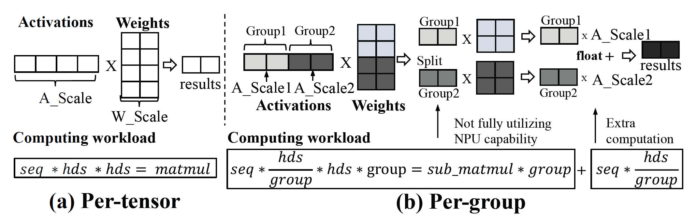
The Challenges of Using NPUs for LLMs
Directly using NPUs for LLMs is inefficient due to fundamental mismatches:
- Variable-Length Prompts vs. Static NPU Execution Graphs:
- NPUs need pre-compiled, fixed-shape graphs.
- Re-compiling for each prompt length is extremely slow (e.g., ~11s for Gemma-2B).
- Padding to max length is computationally wasteful.
- LLM Quantization vs. NPU Architecture:
- LLMs need fine-grained (per-group) quantization for accuracy due to activation outliers.
- NPUs are inefficient with per-group MatMul (requires splitting, float reduction overhead - up to 10x slowdown).
- NPU-friendly per-tensor quantization hurts LLM accuracy significantly.
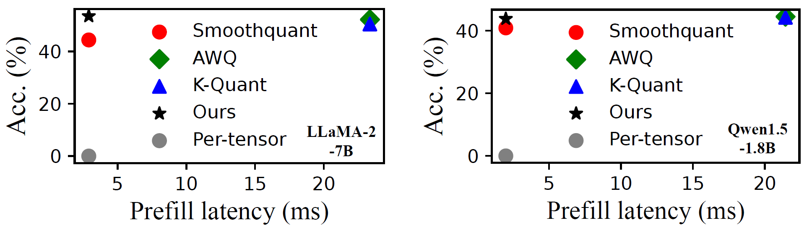
The Challenges of Using NPUs for LLMs
Directly using NPUs for LLMs is inefficient due to fundamental mismatches:
- Variable-Length Prompts vs. Static NPU Execution Graphs:
- NPUs need pre-compiled, fixed-shape graphs.
- Re-compiling for each prompt length is extremely slow (e.g., ~11s for Gemma-2B).
- Padding to max length is computationally wasteful.
- LLM Quantization vs. NPU Architecture:
- LLMs need fine-grained (per-group) quantization for accuracy due to activation outliers.
- NPUs are inefficient with per-group MatMul (requires splitting, float reduction overhead - up to 10x slowdown).
- NPU-friendly per-tensor quantization hurts LLM accuracy significantly.
- Ubiquitous Floating-Point (FP) Operations:
- LLMs still require FP ops (LayerNorm, Attention, Softmax) for accuracy.
- NPUs are very slow at FP math. Offloading FP ops to CPU/GPU easily creates bottlenecks.
The Challenges of Using NPUs for LLMs
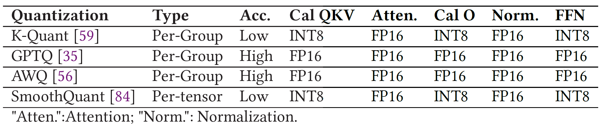
System Design
llm.npu: System Overview
Goal: Reduce prefill latency and energy-consumption for mobile LLMs through NPU.
Key Idea: Maximize NPU usage for INT8 compute, while strategically using CPU/GPU for FP ops and outlier handling to maintain accuracy and efficiency.
Core Techniques (Re-constructing Prompt & Model):
- (Prompt Level) Chunk-sharing Graphs: Handle variable lengths efficiently.
- (Tensor Level) Shadow Outlier Execution: Maintain accuracy with NPU-friendly quantization.
- (Block Level) Out-of-order Subgraph Execution: Maximize hardware utilization.
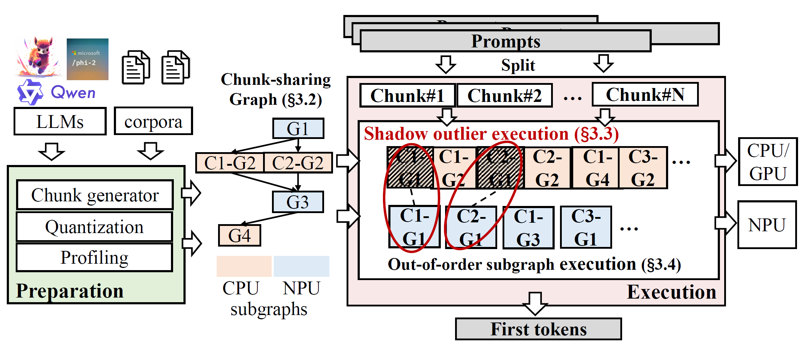
Chunk-sharing Graphs
- Step 1 Chunking: Split variable-length prompt into multiple fixed-size chunks
- Process chunks sequentially, respecting dependency.
- Use pre-compiled NPU graphs for fixed-size chunks -> avoids recompilation.
- Step 2 Graph Sharing:
- Observation: Some LLM ops depend only on chunk size (e.g., FFN), others depend on sequence position (e.g., Attention K/V size).
- Solution: Share the computation graphs for static operators across all chunks. Create separate graphs only for dynamic operators (like Attention).
- Benefits:
- reduce overhead for compiling and storing different compute graphs
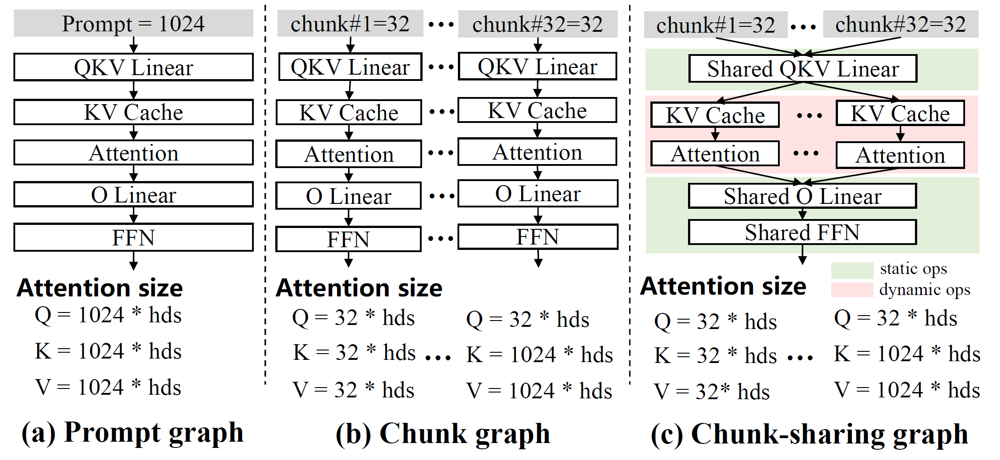
Shadow Outlier Execution
- Hybrid Computation:
- NPU (Main Path): Perform standard per-tensor INT8 MatMul (fast).
- CPU/GPU (Shadow Path):
- Identify activation values outside the INT8 range (outliers).
- Extract these sparse outliers into a compact tensor.
- Perform float MatMul for only the outliers on CPU/GPU (accurate).
- Merge: Add results from NPU and CPU/GPU.
- Benefits: High accuracy (float for outliers) + High NPU efficiency (per-tensor INT8).
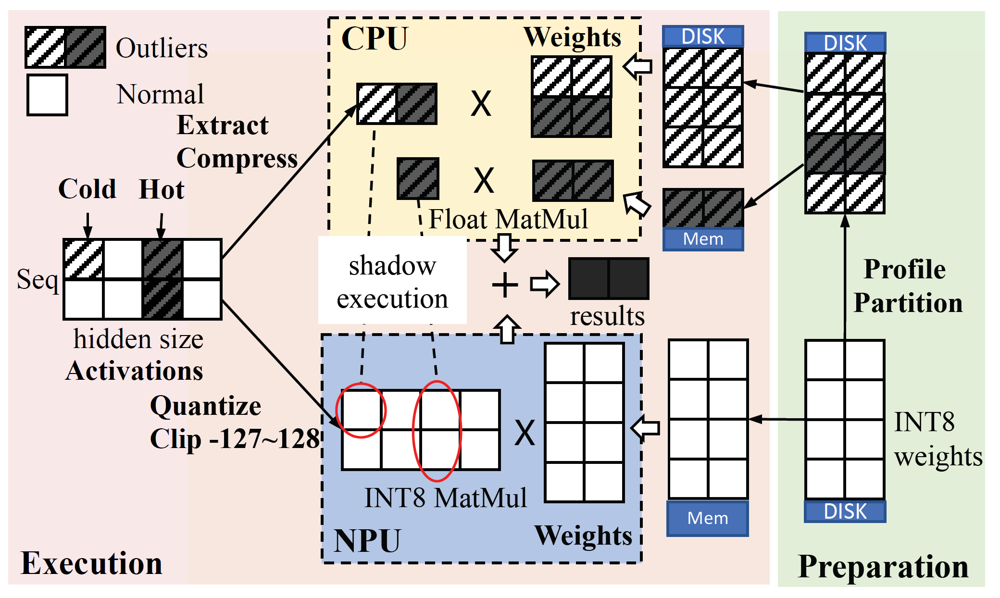
Shadow Outlier Execution - Optimizations
- Challenge 1: Memory Overhead: Need weights on both NPU (INT8) and CPU/GPU (float for outliers)
- Observation: Outliers occur frequently at specific “hot channels” (<3% channels responsible for >80% outliers).
- Optimization: Keep only hot channel outliers on CPU/GPU memory. Load cold outliers from disk on demand.
Shadow Outlier Execution - Optimizations
- Challenge 2: Synchronization Overhead: CPU/GPU computation + merging adds latency.
- Observation: Outliers in many layers have minimal impact on final accuracy.
- Optimization: Profile outlier “importance” per layer offline. Prune (ignore) outliers in less important layers (e.g., 85% least important). -> Reduces CPU/GPU work & sync cost.
Out-of-order Subgraph Execution
- Dynamic Scheduling:
- Maintain pools of ready-to-run subgraphs for NPU and CPU/GPU.
- Use an online heuristic scheduler.
- Priority: Choose the next subgraph to execute (on either NPU or CPU/GPU) that maximally reduces NPU idle time (critical path).
- Benefit: Improves parallelism, minimizes NPU stalls, boosts overall throughput.
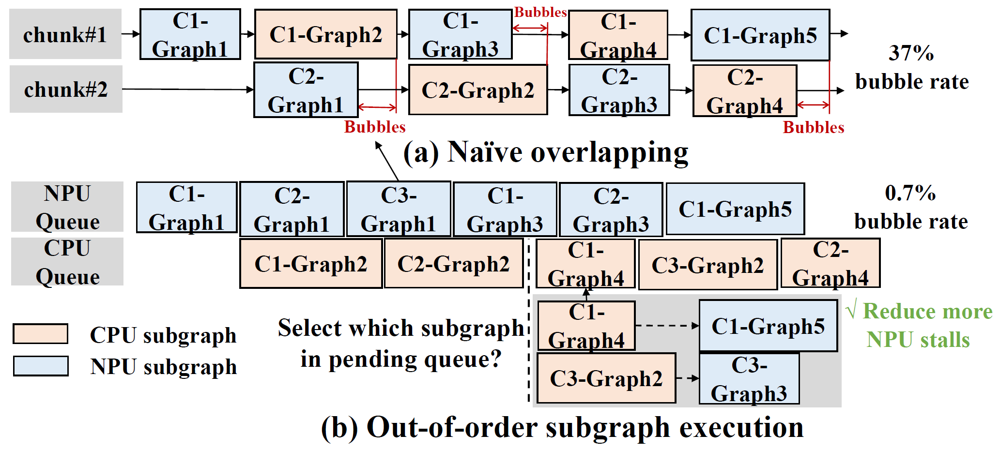
Evaluation
Experiment Setup
- Mobile devices: Xiaomi 14 (Snapdragon 8 Gen 3), Redmi K60 Pro (Snapdragon 8 Gen 2).
- Baselines:
- CPU: llama.cpp, MNN
- GPU: TFLite, MLC-LLM
- NPU: PowerInfer-v2 (Reported data)
- Tasks/Datasets:
- LongBench (Context QA)
- DroidTask (UI Automation)
- PersonaChat (Summaries)
- Standard LLM benchmarks (LAMBADA, HellaSwag, MMLU etc.).
Prefill Performance
- Key Result:
llm.npusignificantly outperforms all baselines in prefill speed. - Speed:
- Achieves >1000 tokens/sec prefill for billion-param models (first on mobile).
- Avg 22.4x faster prefill than baselines
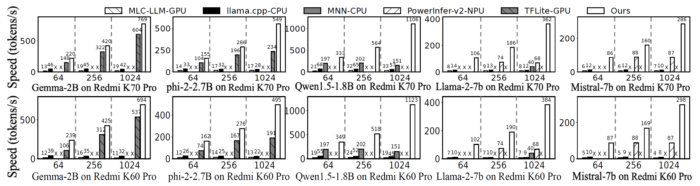
End-to-End Performance
- Up to 32.8x speedup on UI Automation tasks.
- Up to 46.2x speedup on Context-Aware QA.
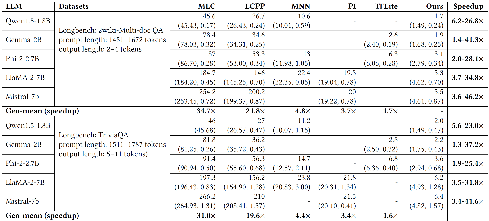
End-to-End Performance
- Up to 32.8x speedup on UI Automation tasks.
- Up to 46.2x speedup on Context-Aware QA.
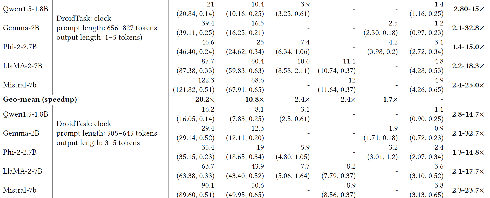
Accuracy
llm.npuachieves negligible accuracy loss (<1% avg compared to FP16).
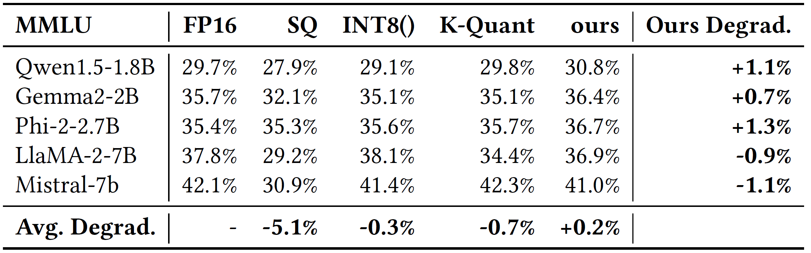